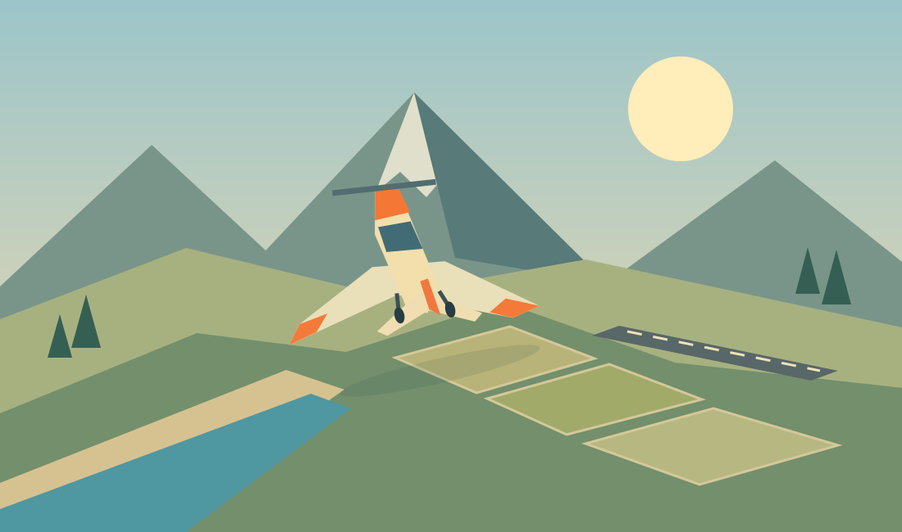

WebGL 2 is required. Enable graphics acceleration and reload.
THE OPEN-COUNTRY FLYING CLUB
Sky Harbor.
Five airfields. A wide-open world. Every landing is yours.

28 KM OF HORIZON ONE LITTLE AEROPLANE
FLIGHT DISPATCH / 01
Where shall we fly?
Take the Kestrel out. Fixed gear, calm skies, and a little guidance all the way home.
→
Welcome to Sky Harbor. Add power, rotate at forty metres per second, and climb into the open country. Follow the gold arrival gates. You fly the approach, flare, and braking. Take your time. Every landing is a little better than the last.
Local & offline-ready · No account · No timer · No autopilot
SKY HARBOR
HDG 090°GATE 090°7.0 km
─ ◇ ─PITCH +0°
AIRSPEED0 m/sROTATE 40 · FINAL 40–46
ALTITUDE / SEA LEVEL26 m ASL0 m AGL · above ground